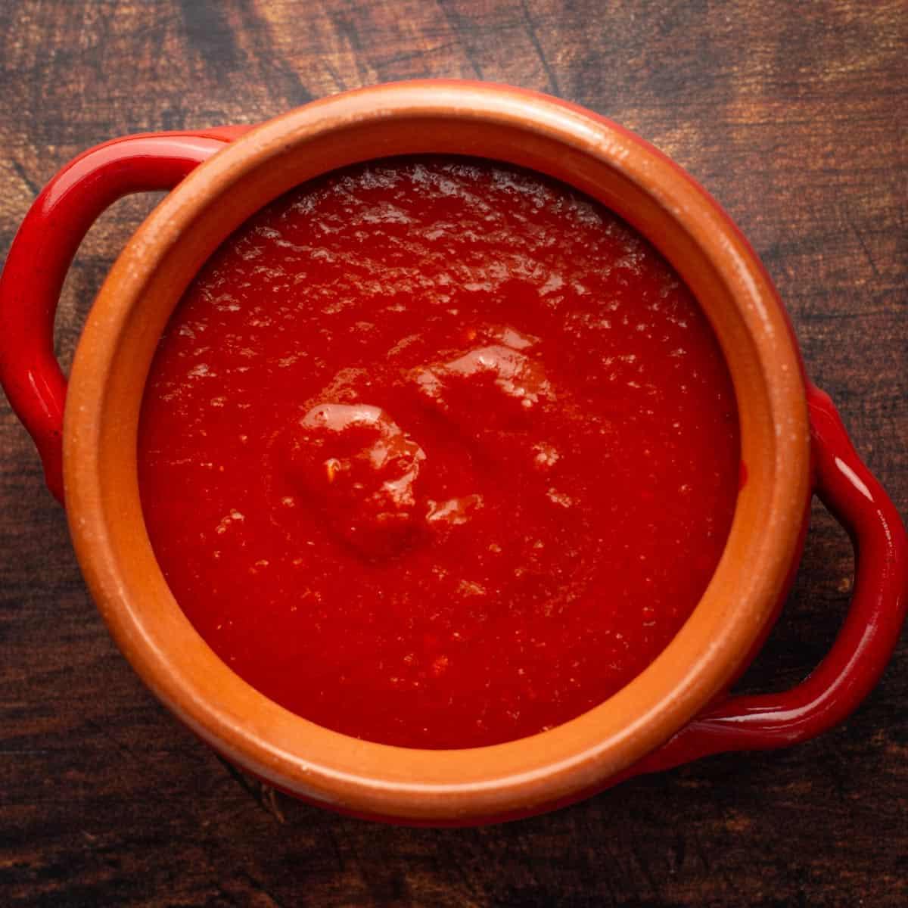

Back to homepage
Mexican Red Chile Sauce recipe

A thick, flavorful, spicy Mexican-style red chile sauce useful for lots of Mexican-themed dishes. Freezes very well.
Ingredients
- 5 dried guajillo chiles
- 3 dried ancho chiles
- 2 dried árbol chile
- Water to cover
- 1 chipotle in adobo
- 2–3 tbsp cumin seeds
- 1–2 tbsp Mexican oregano
Steps
- In a dry skillet, lightly toast dried chiles until they develop a pleasant aroma
Do not burn them--they'll go bitter! If you think you burned them, throw them away and try again or skip this step.
- Stem and optionally seed chiles
- Reconstitute chiles
- Place dried chiles, cumin seeds, and mexican oregano to a small pot from the pot
- Barely cover with water.
- Bring to a boil.
- Turn off heat, cover, and let stand for at least 15 minutes
- Add the solids, the chipole, and 1/4 cup of the soaking liquid to a blender.
- Add more liquid as needed to help it blend and come together to a medium-thick sauce.
- You could also finely mince the chiles with a knife or mash them in a mortar and pestle.
- Reserve any remaining soaking liquid if you think you could use it elsewhere. For example, if you're
using the chile sauce to make a stew, just add the liquid to the stock. Don't throw away flavor!
- Wipe out any remaining solids from the pot.
- Add the sauce back to the pot and simmer for at least 15 minutes.
- It's done! Use immediately or freeze it for later.